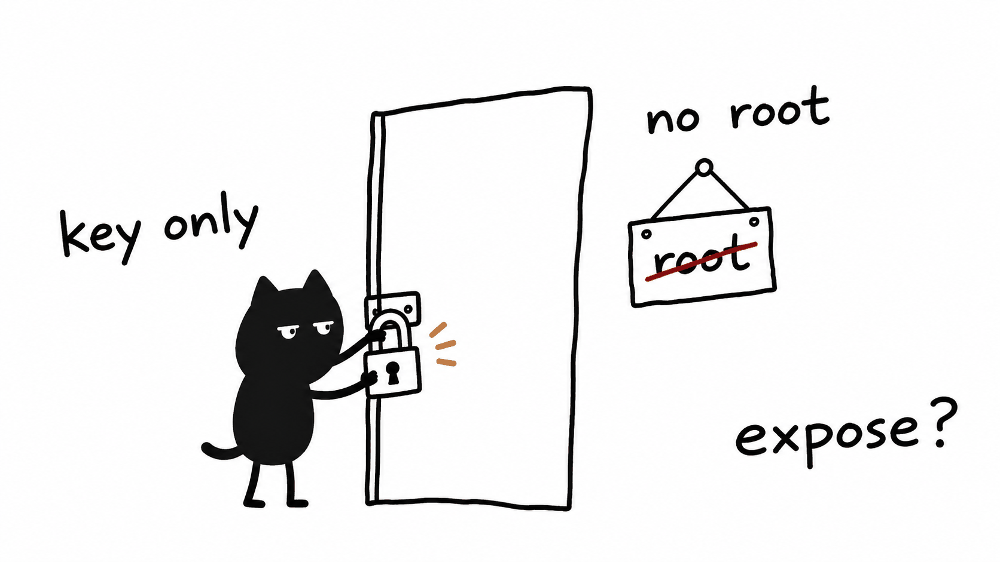

Security & Hardening
Dev defaults, their risks, and the exact changes needed before exposing a sandbox.

Ghost Machines defaults to a trusted-developer laptop posture, not a multi-tenant production posture. This page states the defaults plainly, then gives the exact changes needed before you expose a sandbox to other people or the internet.
Threat model: a container is not a VM. All sandboxes share the host kernel, and the container user has passwordless-path
sudoinside it. Treat the sandbox as a strong process boundary, not a security boundary against hostile code.
Defaults and their risk
| Default | Value | Risk if exposed |
|---|---|---|
developer password |
ghost |
Anyone who can reach port 22 gets a shell with sudo. |
root password |
ghost |
Same, as root. |
PermitRootLogin |
yes |
Direct root SSH; no accountability trail. |
SSH_PASSWORD_AUTH |
true |
Brute-forceable. |
sudo |
ALL=(ALL) with password |
Fine locally; the password is public knowledge. |
| Docker socket | not mounted | Good: no host escape via Docker API. |
| Privileged mode | not used | Good: default capability set only. |
These are deliberate so first run works without configuration. They are not a claim of production readiness.
Hardening checklist
P0 — before exposing to tenants or the internet
- Kill the default passwords. Generate per-instance secrets instead of baking
ghostinto the image:
bash
# .env
GHOST_USER=developer
SSH_PASSWORD_AUTH=false
Key-only login plus per-tenant keys removes the shared secret entirely. If you must keep passwords, rotate them at boot from a host-side file (mounts/.secrets/<instance>, permissions 600) rather than using a constant.
-
Require a key when a tunnel is active.
start.shalready warns on a placeholder token; additionally ensureSSH_AUTH_KEY_PATHresolves to a real key before enablingremote. -
Disable root SSH. In the engine Dockerfile set
PermitRootLogin prohibit-password(orno), then rebuild or patch via a bind-mountedsshd_config:
bash
./start.sh -e debian -m single --build
docker exec -it <container> sed -i 's/^#*PermitRootLogin .*/PermitRootLogin no/' /etc/ssh/sshd_config && docker restart <container>
-
Scope mounts.
mounts/<instance>is read-write by design. For untrusted tenants, mount only the project subdirectory they need, and keep secrets outside the workspace. -
Vet what you install.
sudoinside the sandbox is real: a maliciousnpm install --unsafe-permorcurl | bashruns with your container privileges and can read every file in the mounted home.
P1 — container hardening
docker-compose.yml currently ships the permissive defaults. For untrusted workloads add:
read_only: true
tmpfs:
- /tmp:rw,noexec,nosuid,size=256m
cap_drop: [ALL]
cap_add: [CHOWN, SETUID, SETGID]
security_opt:
- no-new-privileges:true
Keep restart: unless-stopped and the read-only LXCFS mounts (:ro) as they are. Never add /var/run/docker.sock, --privileged, or the host PID namespace.
P2 — SSH hardening
Beyond SSH_PASSWORD_AUTH=false:
PermitEmptyPasswords no
X11Forwarding no
AllowAgentForwarding no
ClientAliveInterval 300
ClientAliveCountMax 2
MaxAuthTries 3
Set these in the Dockerfile (persistent) or via entrypoint.sh (applied on every boot). Keep AllowTcpForwarding yes if you rely on ssh -L for dev servers.
Network exposure
- No tunnel: only the published SSH port is reachable, and only from the host unless you bind
0.0.0.0(Compose already publishes on all interfaces — put the host behind a firewall if it has a public IP). - Tunnel: Cloudflare terminates TLS and enforces Access policies; do not additionally open the SSH port to the internet.
- Outbound: unrestricted by design (agents need the network). Egress filtering is a host/network concern, not something this repo does for you.
Secrets
.envis auto-chmod600bystart.sh; it is git-ignored.- Never bake tokens into a Dockerfile — build args and layers are readable from the image.
- Cloudflare tokens belong in
.envor your secret manager, not indocker-compose.yml. - SSH keys: only public keys are mounted into sandboxes.
Audit
./start.sh status # what is running, on which ports
docker port ghost-machine-single # published ports only
docker inspect --format '{{.HostConfig.Privileged}} {{.HostConfig.CapAdd}}' ghost-machine-single
docker exec ghost-machine-single ss -tlnp # listening sockets inside
docker exec ghost-machine-single sudo -l -U developer
tests/test_m1_security.sh asserts the UID/GID sync, key permissions and entrypoint behaviour on every CI run; extend it when you tighten a default.